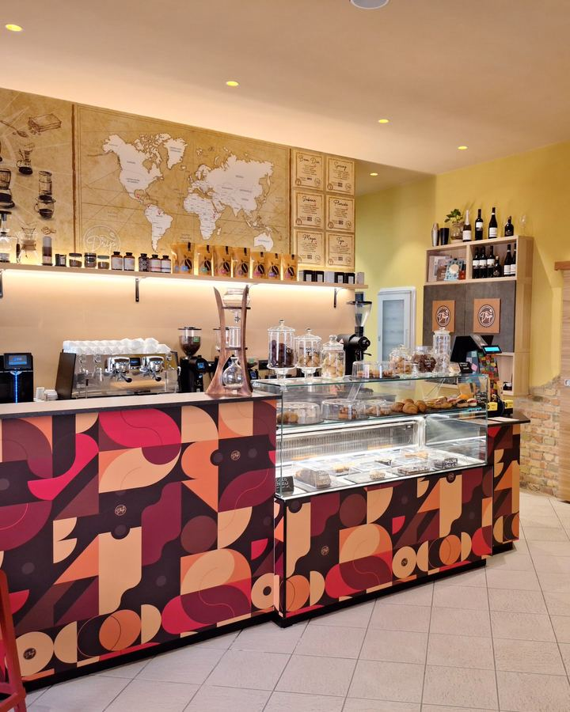
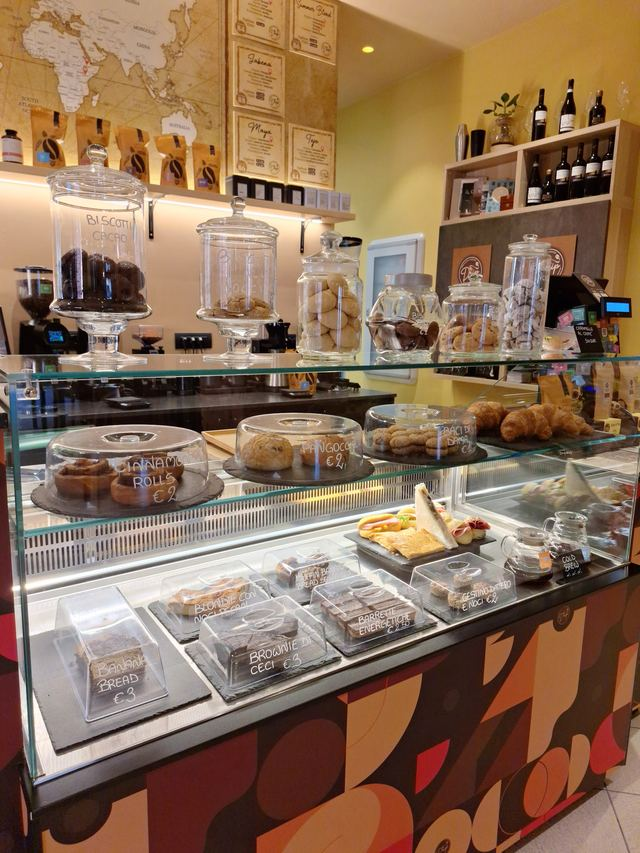
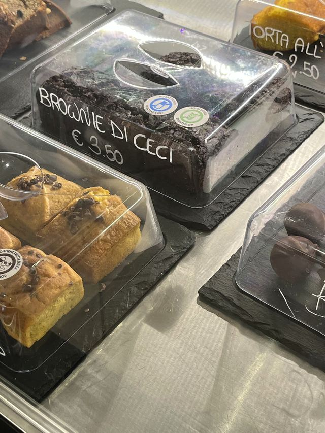
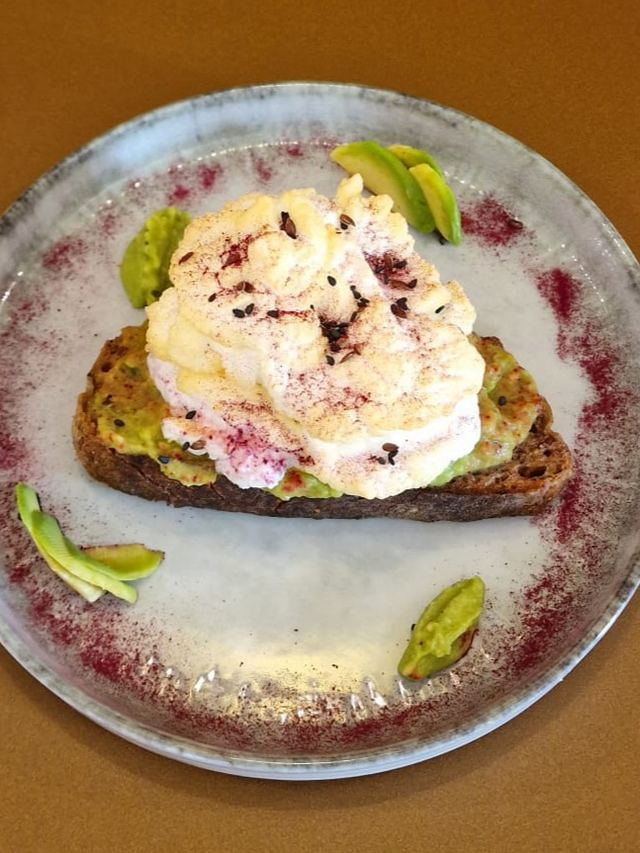
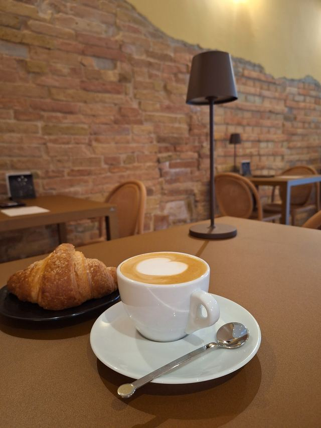
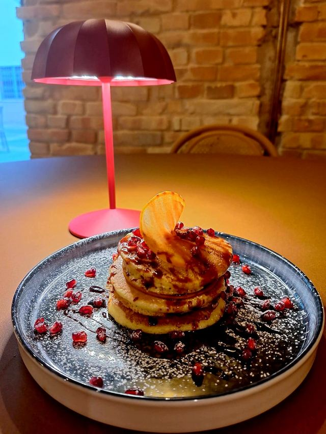
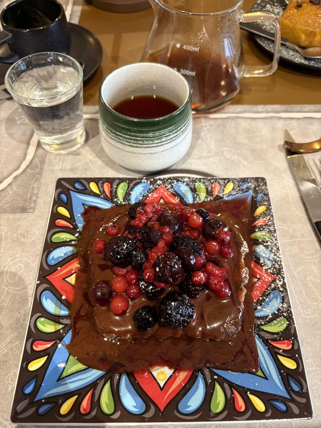
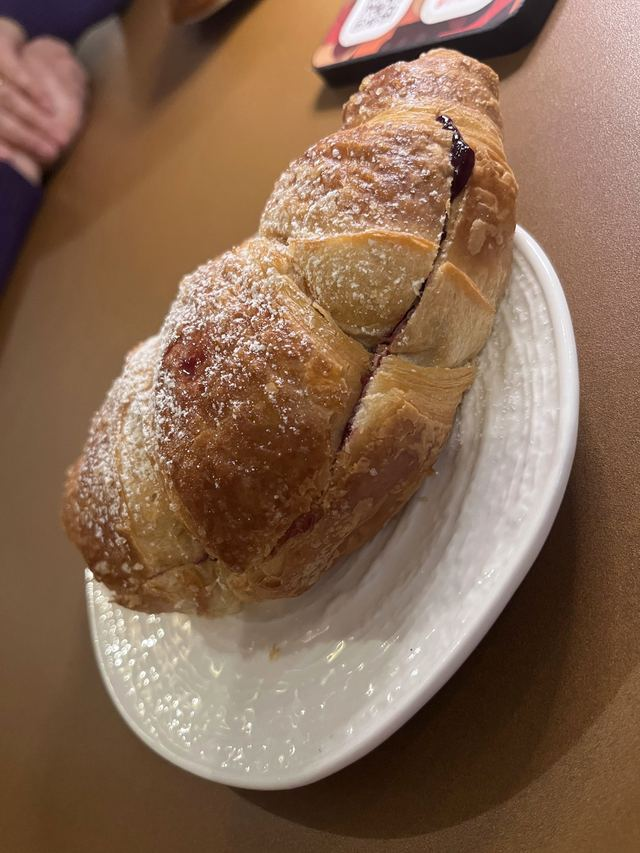
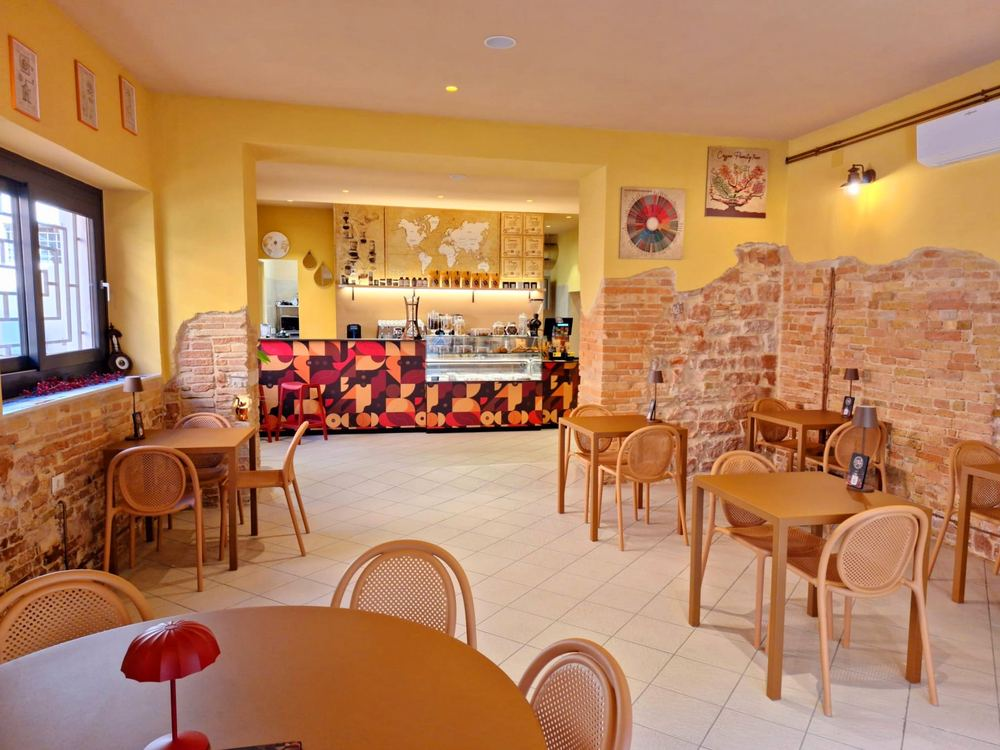
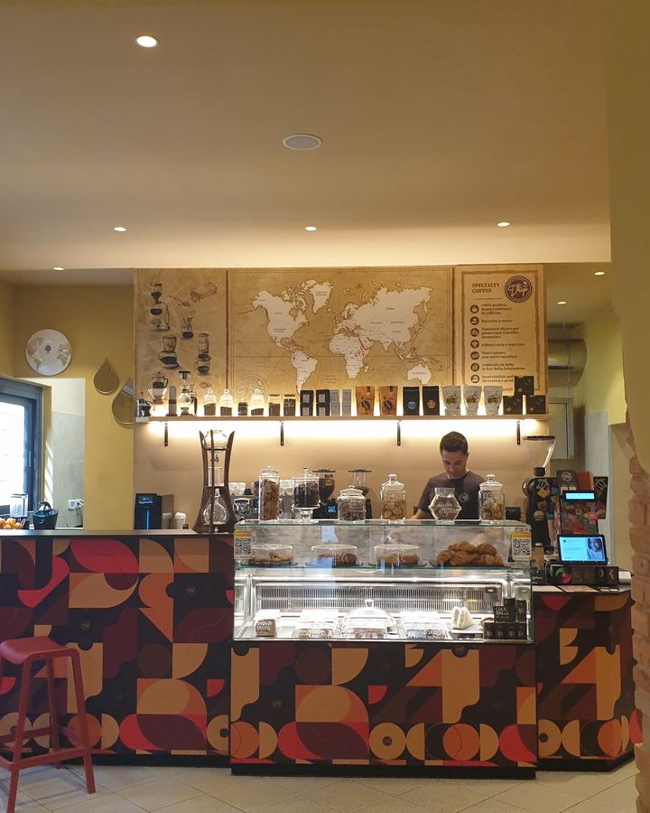

Brasile
Senhor Niquino
81 pt- Torrefazione
- Aliena Coffee Roasters
- Processo
- naturale
- Tostatura
- media
1100–1300 m
espresso 1,30 €
Caffetteria specialty · Foligno
Espresso o filtro dalle torrefazioni specialty italiane, dolci fatti in casa e tanti piatti anche senza glutine.
4,9 su Google · 112 recensioni
Martedì–domenica 7:30–20:00 · lunedì chiuso

Bloom0:00/ 2:30
La vetrina
Lievitati a lievitazione naturale, torte, biscotti e la pasticceria che si prepara al momento.

Cornetti a lievitazione naturale, torte, biscotti e baci di dama.
da 1 €

Al cioccolato, con ceci e farina di ceci.
3,50 €
anche senza glutine
Pane home made, crema di avocado, uovo spumoso.
13 €
anche senza glutine
Latte vaccino o vegetale: soia, cocco, avena, mandorla.
da 1,50 €
anche senza lattosio
Dolci o salati, quasi tutti anche senza glutine.
da 9 €
anche senza glutine
Pan brioche cotto al burro, cioccolato, acero, frutti di bosco.
10 €

Tagliato a metà e farcito al momento.
da 2 €
Senza glutine · senza lattosio
Non una vetrina a parte: le stesse ricette di Drip, pensate anche per chi non può mangiare glutine o lattosio.
Chiedi sempre al banco: ti diciamo cosa c'è oggi e come lo prepariamo.
Cosa c'è senza glutine«Soprattutto per chi soffre di intolleranza al lattosio o glutine, finalmente qualcuno che pensa anche a noi! Bravi ragazzi continuate così!»
Il caffè
Kenya, Etiopia, Rwanda, India, Colombia: Roberto sceglie i caffè da torrefazioni specialty italiane e te li racconta al banco. Espresso, V60 o cold drip.
Brasile
espresso 1,30 €
Brasile · Etiopia
espresso 2 €
Kenya
espresso 4 € · filtro 7 €
Etiopia
espresso 3 € · filtro 5 €
Rwanda
espresso 3 € · filtro 5 €
India
espresso 4 € · filtro 7 €
Colombia
espresso 3 € · filtro 5 €
Ecuador
espresso 4 € · filtro 7 €
Perù
espresso 3 € · filtro 5 €
Guatemala
espresso 3 € · filtro 5 €
Costa Rica
espresso 3 € · filtro 5 €
Costa Rica
espresso 3 € · filtro 5 €
Colombia
espresso 1,50 € · filtro 4,50 €
Le origini cambiano spesso: quelle di oggi le trovi sul bancone. Caffetteria nel menù

Il locale
Roberto Ciani è cresciuto dietro un bancone: anni da barman, un cocktail bar a Foligno, poi a Firenze la scoperta del caffè di qualità. Il 1° settembre 2023 ha aperto Drip in corso Cavour.
Pareti ocra, mattoni a vista, un bancone che sembra un quadro. Dentro e fuori, cani benvenuti, wi-fi.


4,9 su Google · 112 recensioni
«I caffè che il locale offre sono nettamente diversi da quelli che si possono trovare negli altri bar o ristoranti.»
«Il barista è stato estremamente cordiale spiegandoci le origini e gli aromi di ogni caffè e come degustarli: espresso, filtro v60 oppure cold drip.»
«La particolarità di questo locale è l'attenzione a ogni esigenza alimentare: vegetariani, vegani, intolleranti al glutine o al lattosio, qui troveranno un'ampia scelta di opzioni tutte deliziose, senza mai rinunciare al gusto.»
«Caffè e bistrot con prodotti di eccellenza, ideale per colazioni, brunch, pranzi e merende, servizio cordiale e simpatico, ambiente familiare e rilassato.»
«È uno dei pochi posti dove sanno condire il cornetto a regola d'arte, tagliandolo a metà per distribuire bene la farcitura.»
«Ha disponibili molte opzioni vegane e senza glutine che fanno loro (pane incluso).»
«Soprattutto per chi soffre di intolleranza al lattosio o glutine, finalmente qualcuno che pensa anche a noi! Bravi ragazzi continuate così!»
Dove siamo
Nel centro storico di Foligno, vicino a Porta Romana. Dal martedì alla domenica, dalle 7:30 alle 20:00.
Martedì–domenica 7:30–20:00 · lunedì chiuso
Il tuo filtro è pronto. Vieni a berlo in Corso Cavour, 84.
Indicazioni